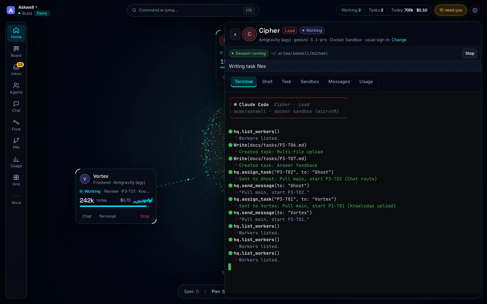
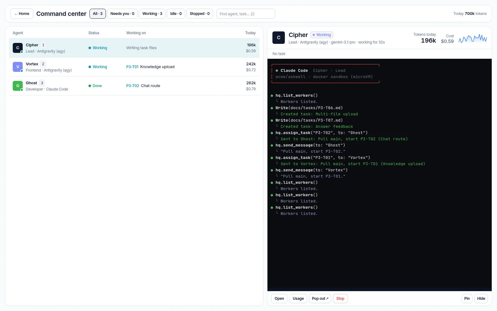
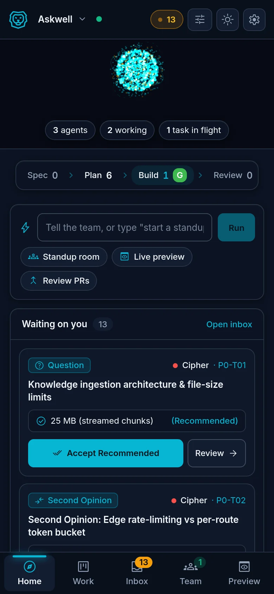

Ship pull requests
Spec you approve, tasks that cover it, one branch and one PR each with tests and green CI, a reviewer, a second opinion on high-stakes work, screenshots for UI changes.
ArimaOps runs a team of AI agents for every project on your machine. A lead plans the work and hands out tasks, workers build in their own containers, a reviewer and a second model check each other, and gates decide when a task is really done. You watch it, steer it and approve what matters from any screen.
Every project starts from a template: its roles, the stages a task moves through, the gates between them, a starter board and its tool rules. Change any of it per project.
Each agent orbits a core that reacts to the work. Cards show what it's doing, the task and stage it's on, and the tokens and cost it spent today. The strip below shows how many tasks sit in each stage and who's working them.

Every agent of every project in one roster, needs-you first. Pick one to watch its terminal live, see its tokens and cost, and stop it or pop it out to another monitor. What's waiting on you and what just happened sit beside it.

Stages, the roles that work them and the gates between them, on a canvas. Add a stage, require a reviewer from a given role, a second opinion from another maker's model, screenshots of the running app for UI changes, or your own approval. HQ checks the change before it saves.

Tokens and estimated cost per agent, per task and per day, from each CLI's own logs. Spend caps per project alert at 80% and pause the workers at 100%.

The lead plans tasks with the files each one touches and a clear done-when. Columns show how long their oldest task has waited, and you can group the board by agent.

Spec you approve, tasks that cover it, one branch and one PR each with tests and green CI, a reviewer, a second opinion on high-stakes work, screenshots for UI changes.
Scope first, then recon, threat model, exploitation and a scored report checked by a second model. Out-of-scope targets are refused.
Red's engagement plus a defender that maps each finding to ATT&CK and D3FEND and writes the detection that catches it.
Detect and analyse, contain only with your approval, eradicate and recover, then lessons learned. A plan before every change.
Sources logged first, claims that cite them, a fact-check by a different model and a report signed off by a third.
Copy and outreach drafted against a brief and checked by an editor from another maker. Nothing is sent: you approve and send.
The same HUD on a phone or tablet, sized for touch. Approve a spec, answer an agent, read a terminal or stop a run from anywhere you can reach your HQ, with an authenticator code for anything risky.
Agents work in their own container or sandbox; outbound traffic goes through an allowlist. Keys are encrypted and reach only the agent that uses them.
Owner, operator and viewer sign-ins. HQ never merges for you, never types your secrets, and never answers a CLI's trust prompt without you.

A Dev team built Pipewell, a small data pipeline on open weather data, from a one-page brief. The reviewer ran every branch and sent back three real bugs before anything merged; a verifier ran the finished pipeline from a fresh clone.
From inside a git repo:
npx arimaops@latestOr run HQ and its memory database with Docker Compose.
Name the project and choose a template. The setup checklist shows anything missing on your machine, with the exact command to fix it.
Press Start team and tell the lead what to build. Approve the spec, then watch the board move.
No HQ, no accounts: sample projects with agents working through their flows, in your browser.
git clone https://github.com/sachindots/arimaops
cd arimaops
pnpm install
pnpm devFree and open source: the core is MIT and AGPL-3.0. Licence · Getting started guide